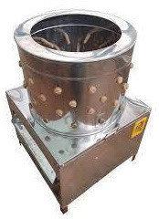
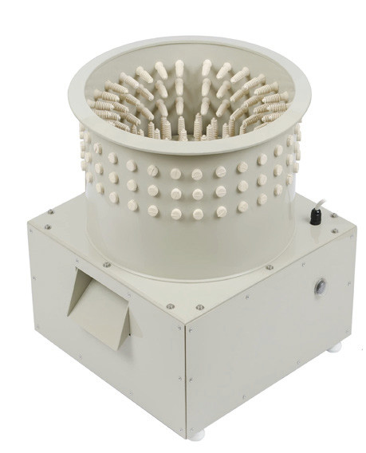
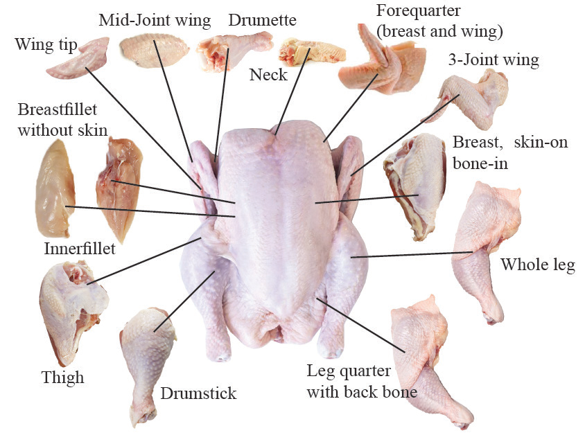

Figure 12.2: Small-scale feather plucking machines

Packaging, cooling and storage
After dressing the carcass, it is packed for sale at the butchery. Packaging can be done to whole carcass or in cuts by wrapping each in thin-layer polythene or any other materials that are not corrosive to meat. The package should be properly labelled. After packing, the pieces are stored at a cool temperature ready for sale.